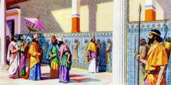
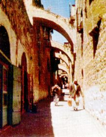
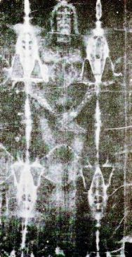
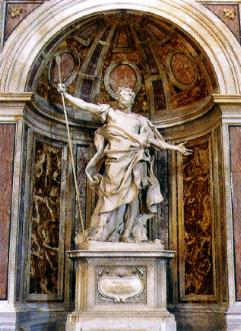

Fue
un viaje calmo y agradable, que le permitió la oportunidad de visitar los
lugares sagrados, por donde
JESÚS pasó y recordar todos
los momentos inolvidables que estaban indeleblemente grabados en su corazón.
Una oportunidad singular y especial, porque ha vuelto a un pasado
que no estaba muy distante, mas que estaba lleno de buenos recuerdos.
Con lágrimas en los ojos, él acordaba que habÃa sido perdonado por la infinita
misericordia Divina, a pesar de haber clavado su Lanza en el lado derecho del
SEÑOR Crucificado, para ver si ÉL estaba vivo o muerto. él recordaba, que habÃa
pedido la cura de aquella herida enorme abierta en su pecho en la guerra del
Egipto, y EL SEÑOR, paternalmente lo curó y lo restauró su salud. él se
recordaba aún, que el SEÑOR misericordiosamente curó sus ojos para que
él pudiese ejecutar con dignidad la misión de su existencia. También,
estaba presente en su corazón que habÃa pedido al SEÑOR la oportunidad de
reencontrar Juliana y de la misma manera, ÉL afectuosamente atendió su
solicitación. Por todo eso, sentÃa la necesidad de mostrar su gratitud, de
revelar públicamente que la Verdad Cristiana habÃa creado fuertes y sélidas
raÃces en su alma, que ahora, sin el SEÑOR, su vida no tenÃa mas sentido y asÃ,
su reconocimiento era una manifestación natural y clara de su espÃritu
convertido. Realmente era, una demostración sincera de un puro
y honrado amor a DIOS.
Con el pensamiento lleno de santos
ideales, llegó a Judea y fue en busca del amigo Yossef, no sélo a
decirle las novedades, pero también agradecerle una vez mês,
su caridad inestimable que sirviéndolo de modo eficaz y fraterno, demostró
también el suyo magnÃfico y gran espÃritu cristiano. Visitó también el oficial
Cornelius en la Guardia Pretoriana, a quién agradeció la atención y la preciosa
amistad en el momento mês difÃcil de su vida. 
Después de decirle
las novedades, ellos cuidaron del traslado de su sueldo a Licaonia.
El dáa siguiente, él quiso
"matar el anhelo" de Jerusalén... Caminó por la ciudad, sin la dirección cierta,
querrÃa caminar y mirar todas las cosas, si fuese posible. QuerrÃa también
transitar aquellos mismos caminos andado por JESÚS... Alguna cosa
muy fuerte en su Ãntimo lo invitaba a proceder asà y entonces decidió
empezar en la "VÃa
Crucis", donde el Redentor sufrió
crueldades, amargó terribles aflicciones y por donde
llevó su Cruz en que murió crucificado. Tomó la dirección del Gólgota. Caminaba
triste y con pesar en el corazón y puede contemplar aquel paisaje bien conocida,
ahora sin las cruces, toda cubierta con vegetación y con las espinas salvajes.
Bajó y recogió alguna tierra, puso en una bolsa de paño y la guardá en el
bolsillo. Pasó por el Jardán de los Olivos, lugar que era preferido por JESÚS y
donde ÉL se quedá horas en oraciones, en una comunicación Ãntima con el SANTO
PADRE ETERNO. (Lucas 22,39-40) Aún en el Jardán, en un lugar mês abierto que
descortinaba una ancha visión de la ciudad, se detuvo y asumiendo una actitud
digna, con muy respecto, elevó sus brazos a lo Cielo y pronunció palabras de
agradecimientos:
"Agradezco
mi DIOS por todo lo que el SEÑOR me proporcionó en la vida y ruego,
tiene compasión de mÃ, perdone mi muchos pecados y mis desaciertos, mis
debilidades y incomprensiones, asà como la falta de paciencia, mi orgullo
excesivo y mi vanidad personal. Perdáname SEÑOR, porque yo quiero corregir mÃos
defectos y nunca mas deseo ofenderlo. Yo quiero perseverar y cumplir los
Mandamientos para sentirlo cada vez mês cerca de mÃ, primordialmente porque hoy
entiendo y veo que el SEÑOR es la parte mês importante de mi vida. Agradezco
muchÃsimo por la protección y todas las gracias que adornó mi existencia. Reciba
mi mês grande y mês fervorosa gratitud con mi solemne y sincera confesión de
fidelidad eterna."
Entonces regresó a la ciudad. Caminando por la calle encontró con Lisias que
conoció en la casa de Yossef. Fue sin duda, una grande coincidencia el encuentro,
pero repleto de júbilo y satisfacción. Ellos hablaron bastante y colocaran las
novedades en dáa. Lisias pasaba por allà en dirección a la casa de José de
Arimatéia, donde con otras personas, iban orar ante el Sudario, el tejido de
lino blanco que envolvió el Cuerpo de JESÚS muerto, cuando ellos lo pusieron en
el Sepulcro. El tejido se guardá con mucho celo y devoción. En él está impresa
la imagen de Cuerpo entero del SEÑOR, frente y parte de atrás, hecha con la
propia Sangre Divino en calco de modo misterioso sobre el lino blanco. Longinus
aceptó la invitación y para la ellos caminaron. En la casa de Arimatéia
encontrarán con el Apóstol Judas Tadeo y mês cuatro personas que ayudaban en la
Comunidad Cristiana de Jerusalén. Juntos oraron delante la Mortaja Sagrada y
después oyeron un narrativo de Judas Tadeo sobre las conversiones en Galilea que
conmovió a todos los presentes. El Apóstol realzó sobre todo, la presencia
poderosa del ESPÃRITU SANTO que estaba operando verdaderas maravillas en las
Comunidades Cristianas. (La imagen
lateral del Santo Sudario de CRISTO que se encuentra en TurÃn en
Italia).
Acabado el encuentro, el Centurión salió en compañÃa de Judas Tadeo y ellos
hablaron mucho mientras caminaban. Longinus habló sobre el trabajo de Pablo de
Tarso y del milagro que testimonio en Listra. También resaltó, con el necesario
énfasis, su gesto torpe y chabacano, clavando su Lanza en el Corazón de JESÚS
Crucificado. Después, realzó su sincero y profundo arrepentimiento, asà como las
gracias preciosas que el SEÑOR misericordiosamente le concedió. Y reveló con
contrición:
"Yo abrÃ
el Corazón de JESÚS arrancando Sangre y Agua para ver si ÉL estaba
vivo. ÉL agradeció y retribuyó. SÃ, en una herida abierta en mi pecho por la
espada de un hereje, antes del SEÑOR la cerrar, puso en el interior de mi
corazón, el pesar, la piedad y un inmenso amor que lavaron y purificaron mi
existencia. Yo admito, estimado Apóstol, que hoy mi corazón es en la verdad
cristiano. Aunque falta alguna cosa, porque pienso que sélo alcanzaré una
completa paz interior, en el dáa en que JESÚS me proporcionar una gracia muy
especial, de podré derramar mis lágrimas de pesar a los pies de Su Santa MADRE,
aquella mujer maravillosa que humildemente trajo el SEÑOR para nosotros. Sobre
Ella yo oà admirables referencias, pero nunca yo tuve la oportunidad de verla y
conocerla, para pedirle que pone la paz en mi pobre corazón y perdáname el
pecado "de la lanza"
que nunca yo olvidaré."
Y siempre caminando, llegara enfrente
una pequeña casa, donde el Apóstol Juan vivÃa. Tadeo tocó una
campanilla tres veces y esperó. Cuando el Centurión hizo mención
de apartarse, abrió la puerta. Era una señora muy bonita... Tajaba un
vestido blanco con un manto azul celestial en los hombros y un velo de tejido
también blanco, cubriendo la cabeza. El poco del cabello visible, mostraba que
era castaño oscuro y normalmente caÃa en sus hombros. El rostro era bien
modelado y con la piel clara y los ojos azules, componiendo una fisonomÃa
encantadora, envuelta por lÃneas delicadas y repletas de inmensa suavidad.
Aunque mantuviese el semblante serio, de su mirada exhalaba albura, pureza y
bondad, con una expresión serena en su haz que infundáa tranquilidad y una
maravillosa paz.
Tadeo hizo la presentación: - "Es MarÃa,
la MADRE de JESÚS"...
¡Longinus
tembló! ¡Su admiración fue tan profunda que no consiguió controlar la grandeza
de la emoción que inundá su alma completamente! En un pulso espontáneo y con
inmensa sumisión, se postró respetuosamente con las rodillas en la tierra como
la mejor manera de saludar Aquella Encantadora Mujer, MADRE DEL SEÑOR. Y no
consiguiendo controlar la grandeza de su alegrÃa, y siempre de rodillas, cubrió
la cara con las dos manos y lloró con humildad y amor, derramando lágrimas de
súplica, de felicidad y de sujeción... MarÃa delicadamente abrió la puerta
mientras el Apóstol Tadeo abrazando el Centurión, adentró con él en la casa.
Después de algunos minutos en silencio asentados en la sala, Longinus dijo su
historia, describiendo el largo camino que ha discurrido hasta su conversión,
realzando sobre todo, la dimensión impresionante del amor de JESÚS, su Bondad
ilimitada y su misericordia infinita. Y completó diciendo:
- ¡" Hoy yo logré un gran deseo en mi vida! ¡Es un momento bonito y muy esperado!
¡Yo rogué al SEÑOR y ÉL con mucho cariño me concedió esta gracia! JESÚS una vez
mês, misericordiosamente oyó mi súplica y me proporcionó toda la felicidad
posible y todas las emociones de ese momento. Yo confeso que estoy
exuberantemente feliz. Por todo que vivà en los éltimos años, los enseñamientos
que conocà y las gracias que recibà del SEÑOR, esta es sin duda, una grande
bendición que ahora completa mi alegrÃa interior con la realización de este
momento sublime. Tengo la alma inundada de una maravillosa felicidad por lo
resto de mi existencia. La, en nuestra tierra tan lejana, en nuestra Comunidad
de Listra, yo mostraré mi gratitud eterna, dando testimonio de las Obras del
SEÑOR y no permitiré pasar cualquier oportunidad que sea, para demostrar con la
fuerza de mi espÃritu, la Bondad y la exuberante Misericordia del CREADOR. Ellos
están albergados en la inmensidad del Corazón Divino, donde se genera y tiene
origen el inmenso Amor de DIOS por cada uno de sus niños. Por eso, Señora, para
sentirme completamente feliz y totalmente agradecido, yo necesito de un favor
precioso: que la Señora también perdáname a ofensa que por infortunio yo cometÃ
contra JESÚS Crucificado".
con mucho cariño me concedió esta gracia! JESÚS una vez
mês, misericordiosamente oyó mi súplica y me proporcionó toda la felicidad
posible y todas las emociones de ese momento. Yo confeso que estoy
exuberantemente feliz. Por todo que vivà en los éltimos años, los enseñamientos
que conocà y las gracias que recibà del SEÑOR, esta es sin duda, una grande
bendición que ahora completa mi alegrÃa interior con la realización de este
momento sublime. Tengo la alma inundada de una maravillosa felicidad por lo
resto de mi existencia. La, en nuestra tierra tan lejana, en nuestra Comunidad
de Listra, yo mostraré mi gratitud eterna, dando testimonio de las Obras del
SEÑOR y no permitiré pasar cualquier oportunidad que sea, para demostrar con la
fuerza de mi espÃritu, la Bondad y la exuberante Misericordia del CREADOR. Ellos
están albergados en la inmensidad del Corazón Divino, donde se genera y tiene
origen el inmenso Amor de DIOS por cada uno de sus niños. Por eso, Señora, para
sentirme completamente feliz y totalmente agradecido, yo necesito de un favor
precioso: que la Señora también perdáname a ofensa que por infortunio yo cometÃ
contra JESÚS Crucificado".
-" Longinus, JESÚS ya le concedió el perdán. Sigues su vida en paz y continúas
dando su bonito ejemplo cristiano, donde hayas estado, para que DIOS sea mês
conocido y pueda ser muy mês amado por todos. Es necesario al Amor Divino, que
generosamente no cesa de derramar gracias sobre la humanidad de todas las
generaciones, que encuentre sus hijos mês disponibles y con los corazones mês
abiertos, para que las gracias alcancen todas las almas y haya paz en las
familias, a fin de que las personas sean de hecho, aquellos niños que el SEÑOR
gustarÃa que cada uno fuese."
Longinus con el corazón repleto de humildad y lleno de amor, arrodilló
reverentemente ante la MADRE DE DIOS, encorvó la cabeza en dirección a lo suelo
y dijo: "Gracias Señora, ore por mÃ."

El
Centurión estaba inundado de felicidad. Nunca imaginó que podrÃa tener en su
vida emociones tan fuertes. Gozando el placer de aquellos momentos, caminaba por
las calles como un niño feliz y travieso, con la sonrisa ocupando todo lo rostro
y haciendo largos pasos, como si quisiese dar pequeños saltos, que traducÃan su
alegrÃa interior y su inolvidable satisfacción.
Viajó a Listra y dáas después de su llegada, casó con Juliana. Asumió las
responsabilidades del cultivo de la uva y la producción de vino. Mejoró la
técnica de la producción y consiguió un producto aún mês sabroso y de calidad
excelente que no tardá a adquirir fama en toda aquella región. Los domingos, la
pareja en compañÃa de la suegra, frecuentaba la Comunidad Cristiana, cuando
ellos también participaban de la Santa Misa. Después, ayudaban a los menos
favorecidos, o sea, las personas que necesitaban de algún tipo de apoyo o
colaboración. Es probable que Longinus haya llevado a Listra "La Lanza de la Pasión", porque era el instrumento que fue usado por DIOS para su cura fÃsica
y espiritual, y también, porque representaba un testimonio elocuente de la Pasión
de NUESTRO SEÑOR JESÚS CRISTO, que podrÃa mostrarse a los fieles
en los encuentros religiosos, con el objetivo de despertar la espiritualidad
en todos los corazones.
Longinus y Juliana constituyeron una fervorosa familia cristiana. Ayudaban en la
Comunidad Eclesial y en todas las oportunidades daban testimonio con la mês
grande disposición, hablando sobre la Misericordia, la Bondad y el infinito Amor
del CREADOR por todos nosotros, sobresaliendo el hecho que a pesar de nuestros
muchos pecados, ÉL nunca se olvidaba de uno de sus niños, mismo aquellos que
estaban mês distantes.
El Centurión se dedicó con entusiasmo en la difusión
de la Cristiandad. Buscaba visitar todas las ciudades y lugarejos, principalmente donde
las personas no querÃan aceptar la doctrina Cristiana y principalmente la Resurrección
de JESÚS. él hablaba con entusiasmo y testificaba la bondad y la misericordia infinita
de DIOS. Fue arrestado y cruelmente martirizado en Capadocia, prójimo donde está
hoy la ciudad de Avanos, en TurquÃa actual, en la región también llamada de Anatélia.
Relacionado con la Vida de Longinus, presentamos a seguir hechos interesantes.
Nosotros recordamos, que fue en la Iglesia de la ciudad de Lanciano en Italia,
dedicada a San Longinus, que ocurrió el primero Milagro EucarÃstico de que
tenemos noticia, cerca del año 700 de nuestra era. Un sacerdote con la fe dábil,
dudaba de la presencia Real de JESÚS en la Sagrada Hostia y en el Vino Consagrado.
¡Cierto dáa en que celebraba la Santa Misa sin mucha convicción, en el momento
de la Consagración, delante o espanto de él y de las personas que participaban
de la ceremonia, la Hostia se transformó en "la Carne y en la Sangre de JESÚS"!
¡Un milagro
extraordinario y sorprendente! EL SEÑOR se manifestó visiblemente
a demostrar su presencia Real en la Hostia y en el Vino Consagrado, y de esa manera,
encender y volver el fervor de la fe en ese sacerdote y en aquellos que tenÃan duda
del Milagro EucarÃstico que se pasa todos los dáas en la Santa Misa. Como testimonio
del Milagro de Lanciano, el Cuerpo de JESUS (
constituido por la Hostia que se transformó en la Carne y el Vino que se transformó
en la Sangre), fue colocado en un tabernáculo, en una
Capilla construida en la misma Iglesia, y se encuentra a la visitación del público.
En
el Museo del Vaticano, en Roma, tiene una Lanza que según la tradición, es la
misma que Longinus clavó en el Corazón de JESÚS Crucificado.
En
la Basélica de San Pedro, en Vaticano, en Roma, hay una Capilla dedicada a San
Longinus.
También en Jerusalén, en la Basélica del Santo Sepulcro, existe una Capilla
dedicada al Centurión romano.
Estos hechos confirman el reconocimiento de la Iglesia por la conversión
admirable y el arrepentimiento de Longinus, probando que él ha tenido una vida
con gramde y profunda santidad, consagrada al CREADOR, como testimonio de su amor
sincero y su dedicación a DIOS.
A la derecha - Imagen de Longinus en la Capilla de la Basélica de San Pedro, en el
Vaticano, Roma, Italia. Podemos observar que el Centurión segura su lanza con
la mano derecha y que el brazo izquierdo está abierto. Este hecho viene a confirmar
una leyenda, segundo a la cual, en el combate contra los herejes otomanos él ha
quedado herido con gravedad, pero no tuvo el brazo izquierdo amputado.
FIN

Prójima Página

 Página
Anterior
Página
Anterior
Regresa
al Ãndice